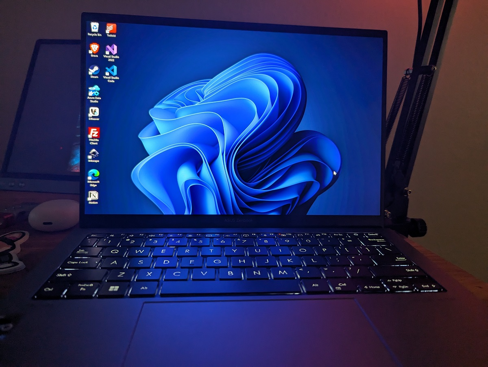

☰ Menu
Definitions
Television
Device for watching shows and news.
Mobile Phones
Portable communication device.
Laptops
Portable computer for work and study.
Science, Technology, and Society (STS)
Created by: Santiago Cadalin C. & April Canales A.
TECHNOLOGY IN MODERN LIFE
What is Technology?
Technology is the use of scientific knowledge to create tools and systems.
It comes from Greek words meaning skill and study.
It evolves from simple tools to digital systems.
Technology We Use
Television
Mobile Phones
Laptops
Television
Mobile Phones

Laptops